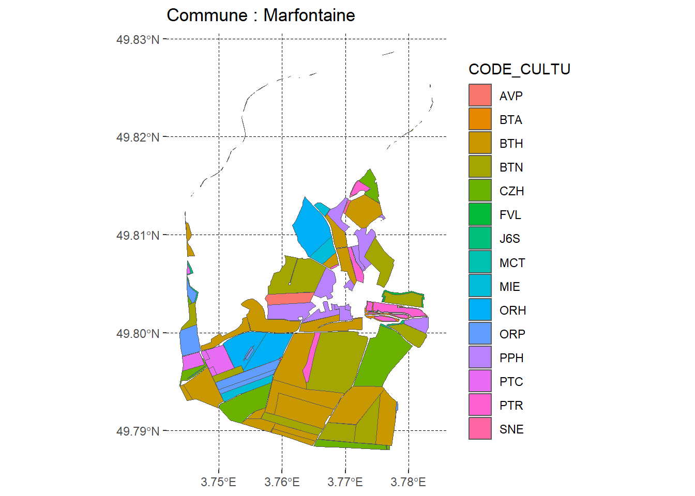

2 leaflet
2.1 Récupération des données rpg pour une commune aléatoire des Hauts-de-France
2.1.1 Récupération des données relatives aux cultures
2.1.2 Récupération des limites communales d’OpenStreetMap au 1er janvier 2022
2.1.3 Chargement des données RPG des Hauts de France
2.1.4 Sélection aléatoire d’une commune et affichage des données RPG associées
code_insee = sample(codes_insee, 1)
commune <- limites_communales_HDF |>
dplyr::filter(insee == code_insee)
commune_geo <- sf::st_geometry(commune)
zone_lambert <- sf::st_transform(commune_geo, crs = "EPSG:2154")
inter_2154 <- sf::st_intersection(data_rpg_geo_HDF_code_cultu, zone_lambert)
inter_wgs84 <- sf::st_transform(inter_2154, crs = "EPSG:4326")
ggplot() +
ggplot2::geom_sf(data = inter_wgs84, aes(fill = CODE_CULTU)) +
ggplot2::labs(
title = paste("Commune :", commune$nom)
) +
ggplot2::coord_sf(expand = TRUE) +
theme(
panel.background = element_rect(fill = "transparent", color = NA),
plot.background = element_rect(fill = "transparent", color = NA),
panel.grid.major = element_line(linewidth = 0.1, color = "black", linetype = "dashed"),
title = element_text(color = "black")
)
pal <- colorFactor(palette = "YlOrRd", domain = inter_wgs84$CODE_CULTU)
leaflet(inter_wgs84) |>
leaflet::addTiles() |>
leaflet::addPolygons(color = NA,
fillColor = ~ pal(CODE_CULTU),
fillOpacity = 0.5,
popup = ~paste(LIBELLE_CULTURE, CODE_CULTU)) |>
leaflet::addLegend(pal = pal, values = ~ CODE_CULTU, opacity = 0.5)